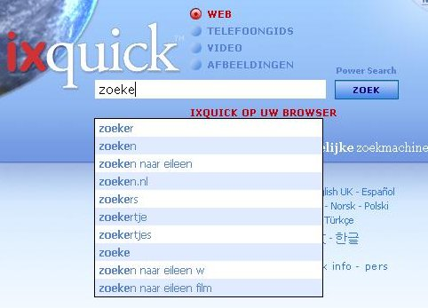

Instellingen
De optie “Maak URL aan”
Onthoudt de instellingen zonder cookies
Ixquick zal privacy bevorderende toepassingen blijven bieden om veilig te kunnen zoeken in het web! |
Kies uw server om te zoeken
|
Zoek Suggesties Uitgelegd | ||
|
Q: Hoe zet ik de zoek-suggesties aan? A: U kunt de zoek-suggesties aanzetten in de 'Instellingen' pagina. De 'Instellingen' pagina kan vanaf iedere Ixquick pagina worden geselecteerd. |  | |
|
Q: Hoe werkt Ixquick's zoek-suggesties? A: Als u een zoekterm invoert dan vergelijken wij deze met een grote hoeveelheid algemene suggesties, de meest populaire zoektermen die overeenkomen worden weergegeven in afnemende volgorde van populariteit. | ||
|
Q: Hoe verschillen de Ixquick zoek-suggesties van andere zoekmachines? A: De meeste andere zoekmachines werken met actuele zoektermen van gebruikers als zoek-suggesties. Dus, door uw zoekterm in te typen bij andere zoekmachines, krijgt u te zien waarop andere gebruikers het meest zochten. Ixquick, als pionier in het beschermen van uw privacy, doet dit anders. Wij tonen alleen algemeen relevante suggesties op basis van de zoekterm die u invoert. | ||
|
Q: Waar komen die zoek-suggesties van Ixquick dan vandaan? A: Onze suggesties komen van een grote verscheidenheid aan bronnen, van online woordenboeken tot algemeen interessante pagina's die vrij beschikbaar zijn in het Internet, zoals Wikipedia pagina's. | ||
|
Q: Zijn de suggesties beschikbaar in alle talen? A: Ja, de suggesties zijn beschikbaar in alle talen die Ixquick aanbiedt. | ||
|
Q: Laat Ixquick ook betaalde suggesties zien? A: Nee. De suggesties zijn uitsluitend gebaseerd op de relatieve populariteit. Advertenties worden hierbij absoluut niet gebruikt. | ||
|
Q: Ik krijg suggesties in het Engels te zien voor sommige zoekwoorden, terwijl ik Ixquick in bijvoorbeeld het Nederlands gebruik? Wat is hiervan de reden? A: Engels is de hoofdtaal van het web. Onze algoritmen zullen eerst suggesties weergeven in uw eigen taal en, indien er niet voldoende suggesties in uw voorkeurstaal gevonden worden, zullen er enige suggesties in het Engels worden weergegeven. Natuurlijk worden de suggesties in uw eigen taal als eerste bovenaan de lijst getoond. | ||
|
Q: Kan ik in de toekomst gepersonaliseerde suggesties verwachten? A: Zoals u weet slaan wij geen persoonlijke informatie op van onze gebruikers. Daarom kunnen wij geen gepersonaliseerde suggesties bieden, dit zou uw privacy aantasten. | ||
|
Q: Ik wil niet dat mijn kinderen aanstootgevende suggesties te zien krijgen. Kan ik daarvoor zorgen? A: Natuurlijk. De suggesties werken in samenhang met de instellingen van uw Familiefilter. Als uw filter staat ingesteld op "Filter de zoekresultaten altijd" tijdens het zoeken, dan zal ons filter vermijden dat eventueel aanstootgevende suggesties getoond worden. | ||
|
Q: Ik heb mijn zoek-suggesties aangezet, maar ik zie geen enkele suggestie verschijnen? Wat kan hiervan de reden zijn? A: Check of Javascript aanstaat in uw browser-voorkeuren. Dit is noodzakelijk voor de zoek-suggesties om te kunnen werken. | ||
|
Q: Ik gebruik geen 'cookies', of ik verwijder deze regelmatig, kan ik dan nog steeds de optie zoek-suggesties gebruiken? A: Ja, dat kan. Omdat wij een privacy zoekmachine zijn hebben wij de optie "Maak URL aan" gecreëerd. Dit maakt het mogelijk om uw specifieke instellingen op te slaan in een URL, in plaats van dat deze in een Cookie dienen te worden opgeslagen. De optie "Maak URL aan" is beschikbaar onderaan in de "Instellingen" pagina. |
||
Wat zijn “cookies” en gebruikt Ixquick die ook?
Een cookie is een veelgebruikt klein data bestandje dat op de harde schijf van uw computer wordt opgeslagen wanneer u een site bezoekt. Ixquick gebruikt slechts één cookie, genaamd "voorkeuren". Deze cookie dient om de vastgelegde instellingen van Ixquick te onthouden tot uw volgende bezoek. Deze cookie expireert 90 dagen nadat u Ixquick voor het laatst heeft bezocht en is volledig anoniem.